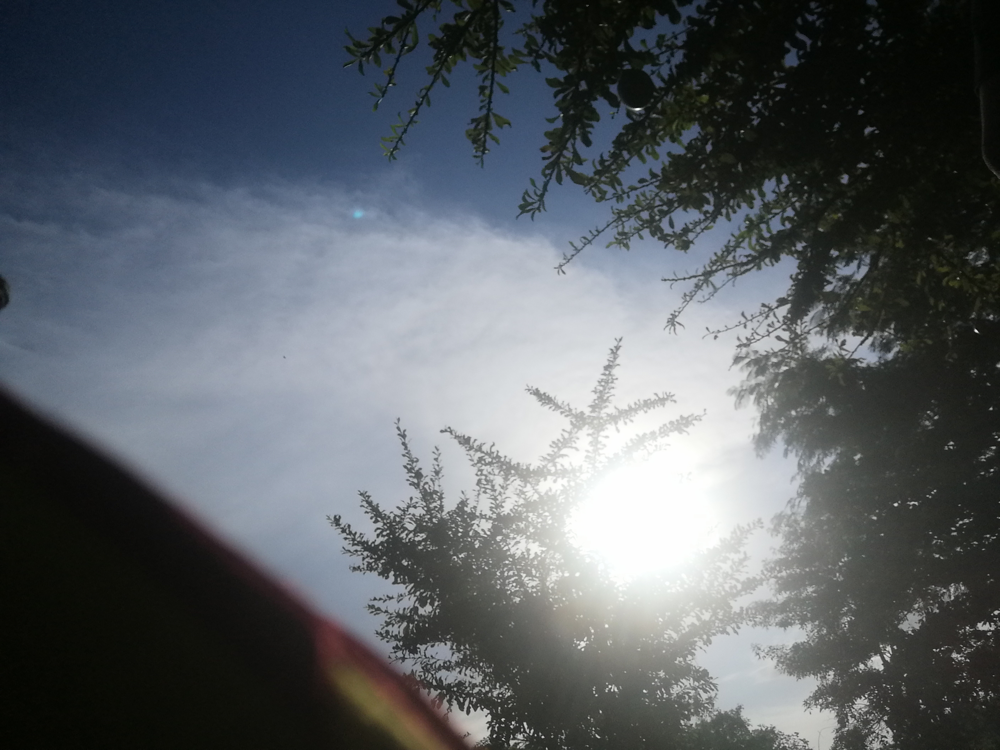
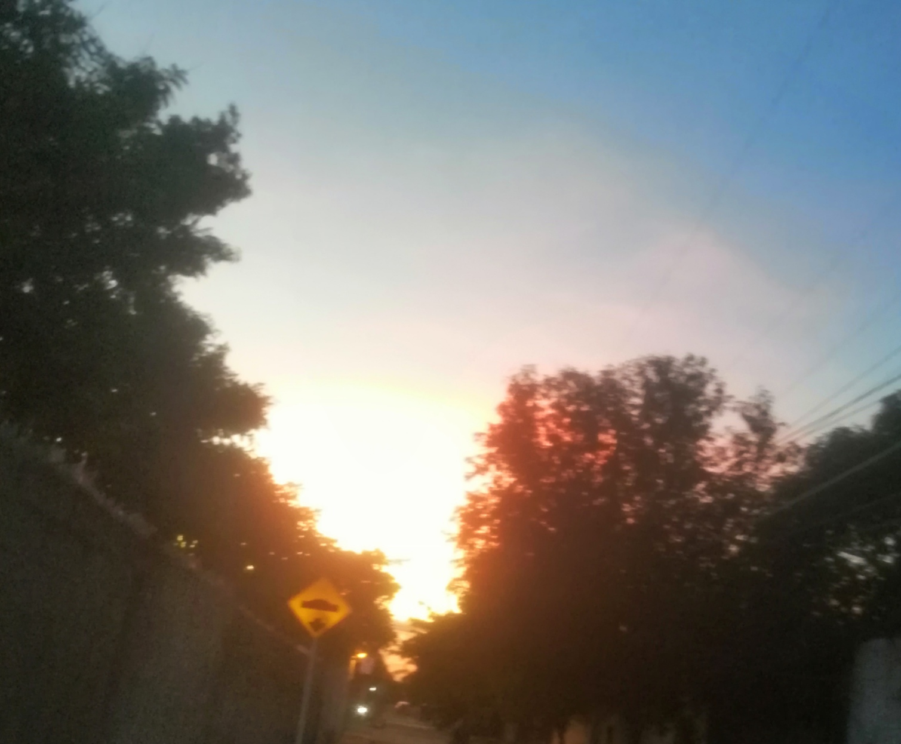
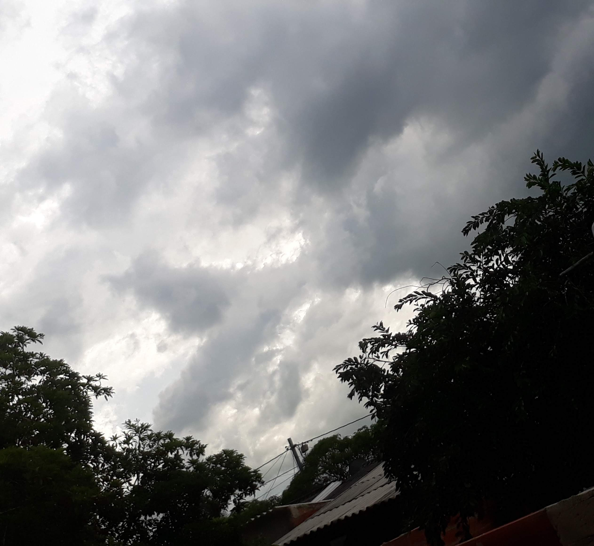
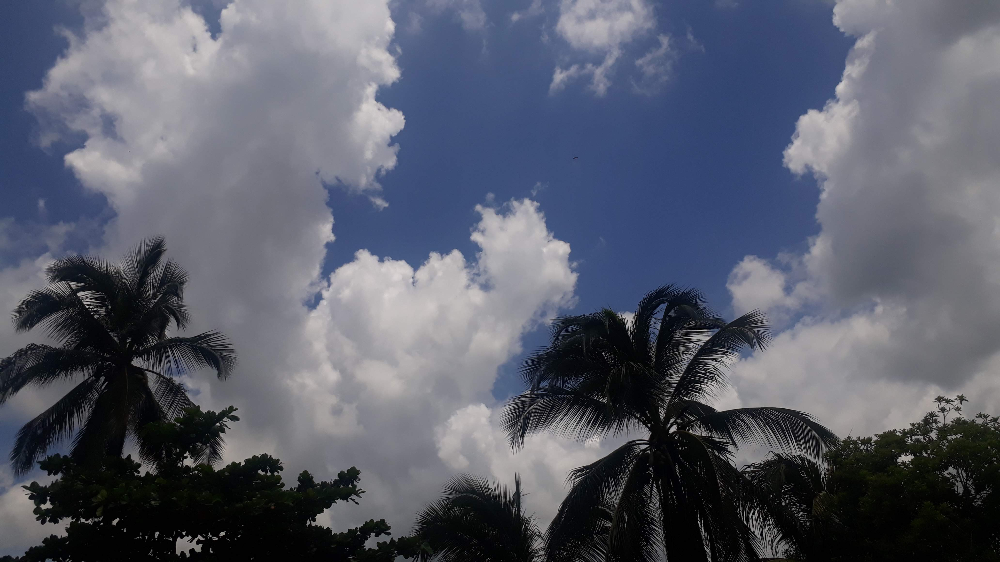
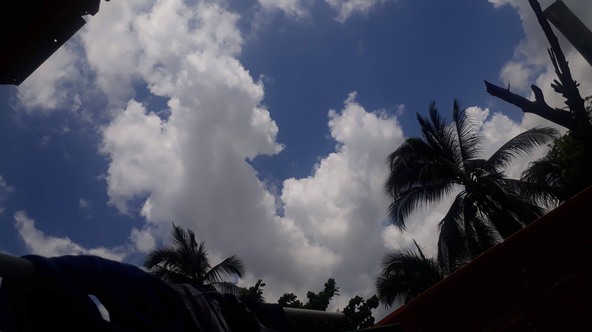

1. Quién soy
- Nombre
- Adrian Felipe Llamas Quintero
- Lugar de nacimiento
- Barranquilla, Atlántico, Colombia
- Ocupación actual
- Estudiante de Ingeniería de Sistemas en la Universidad de la Costa (CUC)
Soy un joven de 20 años, que se considera bastante curioso, carismatico, gracioso (para mi gente cercana nada mas). La verdad siempre me he quedado al hacer autobiografias, no se que decir de mi ademas de lo basico por que a veces no me detengo a pensar quien soy? a donde voy? o que estoy haciendo? soy una persona que le gusta aprender sobre la marcha entonces la verdad no tengo mucho que decir sobre mi. soy alguien basico
2. Mi historia
Infancia
pues yo naci en Barranquilla pero por alguna razon a mis padres les gusto un pueblo que se llama Palmar De Varela entonces nos mudamos cuando yo tenia unos 2 años, asi que practicamente creci alla hasta que cumpli los 17 y volvi a vivir en Barranquilla. Pues de mi infancia no puedo decir mucho a la edad de 4 años ingrese a transicion que es como el primer curso de primaria luego de hacer un examen y pasarlo por que necesitaba tener 5 para entrar, la verdad me gustaba el colegio, era bastante social, habalaba y jugaba con Todos no tuve la mejor infancia pero no me quejo, era feliz.
Familia
Tengo una gran familia, que me quiere mucho, me apoya bastante y que cada vez que podemos nos reunimos para salir o tener reuniones familiares. ya que vivi en casa de mis padres hasta los 16/17 pero me mude a Barranquilla a casa de mis abuelos por el transporte y el estudio. la verdad es que yo amo mucho a mi familia y aunque no lo demuestre, yo haria muchas cosas por cada uno de ellos
Momentos importantes
- Graduarme de Bachillerato luego de tener unos increibles profesores que me enseñaron muchas cosas
- Participar en un proyecto de programacion con un profesor muy querido del bachillerato para contribuir con un problematica
- Ingresar a la Universidad de la costa para estudiar Ingeniería de sistemas, alcanzar Septimo semestre de la carrera y seguir
3. Mi formación
Estudios
Actualmente curso Ingeniería de Sistemas en la Universidad de la Costa (CUC), en Barranquilla.
Cursos y aprendizajes importantes
- Bachiller
- Tecnicos certificados en el servicio nacional de aprendizaje SENA (Administracion, Robotica, Contabilidad, Emprendimiento, Metodologia de la investigacion)
4. Mis intereses
Tecnología y desarrollo
La verdad es que me apasiona bastante la tecnologia, por eso escogi estudiar Ingenieria de sistemas por que uno se sorprende de lo que puede llegar a crear con unas lineas de codigos, unas conexiones y demas cosas que uno puede aprender aca. yo le tome gusto cuando mi profesor de matematicas me sugirio formar un grupo de robotica en 8° de bachillerato de ahi salieron muchas cosas y fue cuando conoci la Universidad, conoci laboratorios, profesores, otras instalaciones y yo pense de una que yo queria entrar a estudiar ahi, me gusto demasiado.
Videojuegos
Tambien como cualquier chico soy muy amante a los videojuegos, la verdad juego de todo tipo y soy de esos que les gusta hacer el juego completo, que tipo agarrar todo items del mapa, cada caja, cada moneda o cada reto. mi pasion por los juegos comenzo a la edad de unos 9 o 10 años como tal, recuerdo que jugue por primera vez el Legend of Zelda:Ocarina of time y fue lo mejor de mi vida en el momento. ya ahora pues con el avance de las tecnologias y demas, pues ya he experimentado otro tipo de clases de juegos, con mayores graficos, mejor historia, mas inmersion y cosas. La verdad es que yo pienso que aunque yo me haga viejo seguire amando los videojuegos y seguire disfrutrando jugar con amigos o en un futuro con mis hijos.
Generos de videojuegos favoritos
- Aventura
- Roguelike
- Sandbox
- Soul
Otros intereses
Ademas de lo anterior siempre he tenido un interes por las fotografias y el dibujo, a la edad de 13-14 años me la pasaba dibujando muchas cosas bosques, casas del vecindario que se veian bonitas, atardeceres, caricaturas o personajes de anime. Me gustaba bastante pasar las tardes dibujando cuando no tenia nada que hacer o alguien con quien jugar, pero con el tiempo lo deje pero paso a convertirse en un interes por las fotos, tenia una camara digital de mi padre y andaba con ella para todos lados tomando fotos del paisaje, casas, lugares y asi, lo deje un tiempo y cuando mi madre me regalo un celular con una camara estupenda volvi a retomarlo, a tomar fotos del cielo, de la Universidad por la noche, entre otras cosas. Ahora no lo hago por que perdi ese celular pero en algun momento me gustaria retomarlo como un hobby pero con una camara un poco profesional que de verdad me deje plasmar sentimientos y pensamientos a travez de una foto.
Algunas de mis fotos
Haz clic en una foto para ampliarla.





5. Mi vida actual
Actualmente pues siempre estoy tratando de ser mejor persona, tratando de aprender en profundizacion lo que es la programacion, entre otras. la verdad es que me gusta aprender sobre la teoria que me dan en la U pero soy mas de lo practico, de agarrar la compu, empezar a ver tutoriales, meterme por aqui y tirarme por alla para hacer algo. por eso siempre trato de hacer proyectos personales, ya sean pequeños o algo un poco mas complejo pero siempre estoy tratando de hacer algo. Tambien combino lo que se de la carrera con videojuegos que los tomo como pequeños pastiempos para pasar el rato y para distraerme un poco.
Pasatiempos
- Modding de Videojuegos
- Servidor dedicados
- Configuración de redes LAN privadas para interconexión y juego con amigos
- Personalización de escritorio
De pasatiempo a aprendizaje técnico
Aunque a simple vista parecen solo pasatiempos. El modding de videojuegos como Genshin Impact me ha llevado a entender cómo se intercepta la comunicación entre un programa y la tarjeta gráfica, además de depurar errores relacionados con el manejo de memoria y texturas. Administrar mi propio servidor (por ejemplo Minecraft o otros juegos) me ha enseñado sobre gestión de dependencias entre versiones y la diferencia entre lo que debe correr en el servidor y lo que corre solo en el cliente. Y montar redes LAN privadas para jugar con amigos me ha dado práctica real con direccionamiento IP, DHCP y solución de problemas de conectividad, justo los temas que veo en mis cursos de redes. Al final, estos pasatiempos se han convertido en una forma de reforzar, de manera práctica, lo que estoy aprendiendo en Ingeniería de Sistemas.
Una mirada especial
A veces es difícil describirse a uno mismo, así que quise dejar que alguien cercano a mí contara, con sus propias palabras, quién soy desde su perspectiva.
A mis ojos, él es una persona con un corazón muy sincero. No necesita esforzarse demasiado para demostrar lo que siente, porque la forma en la que trata a los demás habla por sí sola.
Siempre encuentra la manera de hacer reír a las personas y de hacer que el ambiente se sienta más ligero. También se fija mucho en los pequeños detalles; cosas que otros pasarían por alto, él las nota, las recuerda y les da importancia.
Tiene un alma muy valiosa y muchísimo para ofrecer. A pesar de haber pasado por momentos difíciles, sigue teniendo esa capacidad de preocuparse por los demás, sonreír y hacer sentir bien a quienes quiere.
No siempre dice todo lo que lleva dentro, pero suele demostrarlo con sus acciones.
Y si tuviera que describirlo con una sola palabra, probablemente elegiría hogar. Tiene algo que transmite tranquilidad y hace que puedas ser tú mismo sin sentir que tienes que fingir.
Para mí, es mucho más de lo que probablemente cree ser: alguien con un corazón enorme, una mente llena de pensamientos y una forma muy especial de hacer sentir importantes a quienes lo rodean.
Quizá él diga que no sabe describirse, pero yo sí tengo bastante claro quién es a mis ojos: alguien que vale muchísimo la pena conocer, querer y conservar.
6. Mi futuro
Siendo sincero se que quiero especializarme como ingeniero desarrollador de Backend, eso lo tengo muy claro, para paginas web, aplicaciones, sistemas, etc. pero la verdad es que no estoy cerrado a tener conocimientos basicos de otras areas solo por saber como funcionan y de pronto si en un momento las necesito no tener que aprender sobre eso de prisa. pero en si el futuro no sabemos, vivo el hoy, disfruto cada minuto y me alegro cada dia por tener otro dia mas, ya sea para divertirme, aprender, pasar el tiempo o hacer cualquier cosa. pero siempre agradecido por eso
Puedes conocer más sobre la Universidad de la Costa aquí: Universidad de la Costa (CUC).